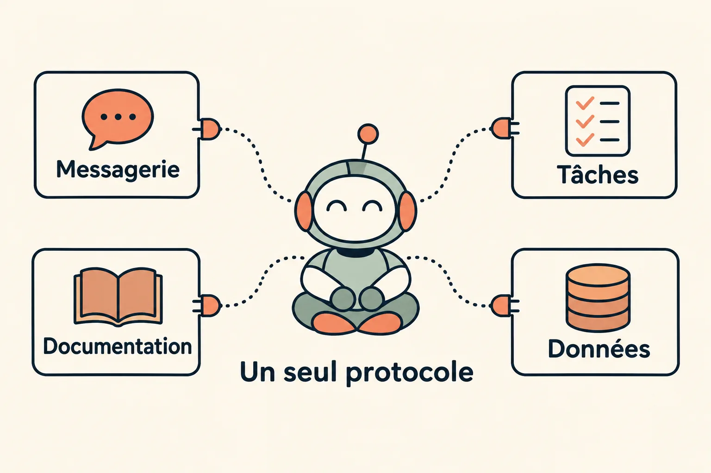
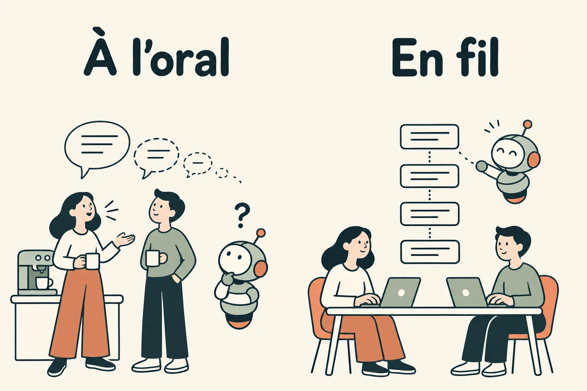
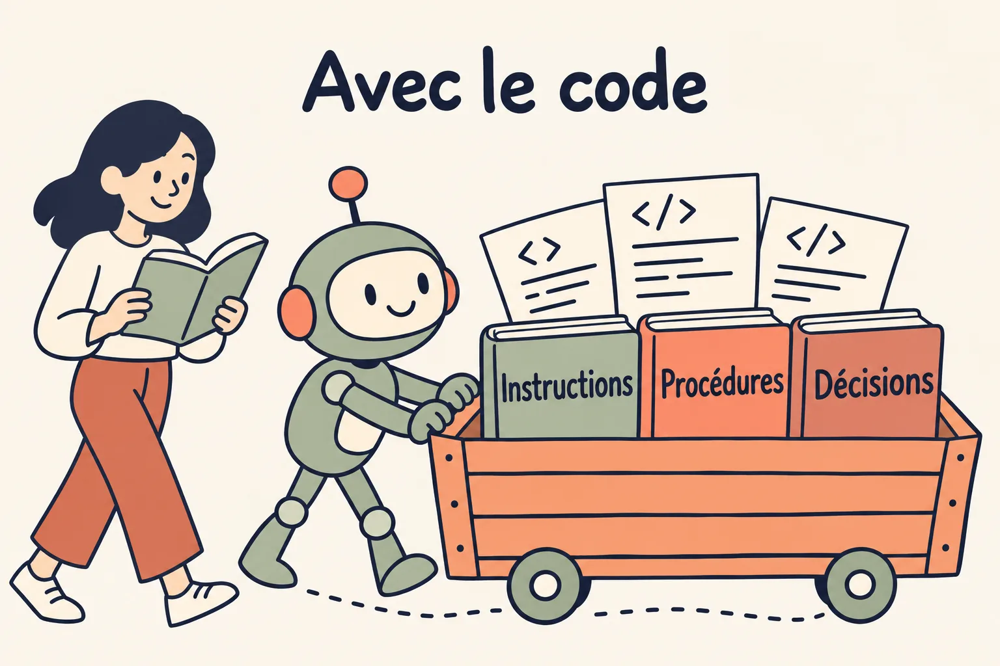
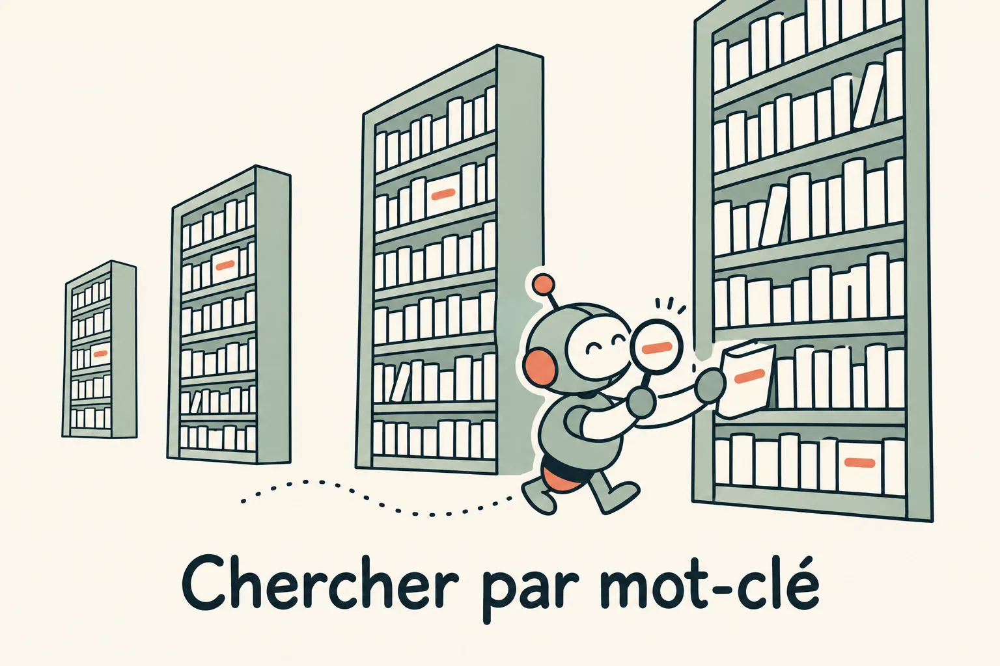
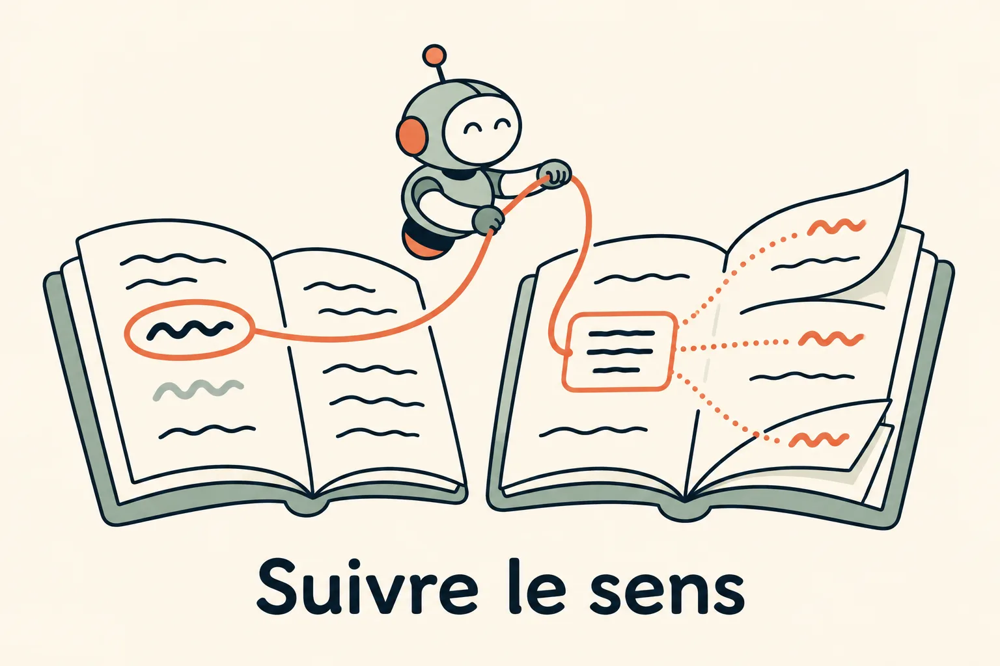
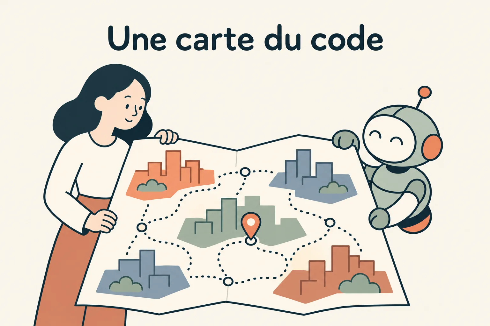
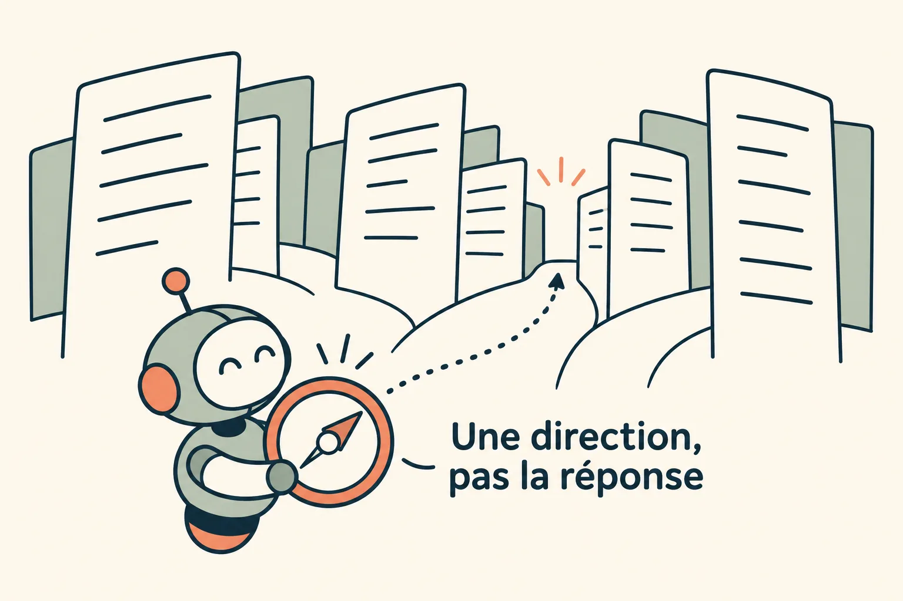

Un contexte qu'on atteint et qu'on parcourt
Un agent ne sait que ce qu'on lui donne à lire. Le contexte d'une équipe, lui, est éparpillé : des conversations, des tâches, des documents, du code, des données. Il faut d'abord le rendre accessible, en branchant chaque source et en écrivant ce qui ne l'est pas encore. Puis l'agent doit s'y orienter sans tout lire, avec des recherches et des index qui lui servent de boussole.
Y accéder
On y arrive en 3 étapes.
1. Brancher chaque source par le même protocole
Chaque outil de l'équipe garde une part du contexte : la messagerie les discussions, l'outil de pilotage les tâches, le dépôt le code et sa documentation, la base les données. Un protocole commun, le MCP, permet à l'agent de les interroger toutes de la même façon : un connecteur par source, qui dit ce qu'elle sait faire. L'agent n'a plus à deviner où chercher, ni l'humain à copier-coller.
Un connecteur est aussi une porte. Il hérite des règles d'accès de la source, en lecture seule par défaut, et chaque session n'ouvre que ceux dont sa tâche a besoin (Garde-fous et Mémoire).

2. Des échanges tracés
Une source ne vaut que par ce qu'elle contient. Ce qui se dit à la machine à café ou en appel n'est écrit nulle part : ni l'agent ni le collègue absent ne pourront le relire. Ce qui s'écrit dans une messagerie, en fil sous le message qui l'a lancé, reste attaché à son sujet, daté, avec ses auteurs. L'outil compte moins que l'habitude d'écrire, qui fait l'objet du module suivant (Culture de l'écrit).

3. Une documentation qui vit avec le code
Les instructions de l'agent, les procédures d'exploitation, les décisions d'architecture et leurs raisons s'écrivent dans le dépôt, à côté du code qu'elles décrivent. Elles changent dans la même PR que lui et se relisent avec lui. Une documentation rangée ailleurs dérive en silence : on la retrouve juste ou fausse, sans savoir laquelle des deux.

Claude Code a des serveurs MCP pour Odette, notre outil de pilotage, pour Slack, pour une réplique en lecture seule de la base de l'application et pour les prospects (Tronc). Chaque périmètre du monorepo a son fichier d'instructions et ses procédures dans le dépôt. Une mémoire d'équipe digère chaque jour les fils Slack et les tâches, et en injecte l'essentiel au démarrage d'une session (Mémoire).
S'y orienter
Tout brancher ne suffit pas : un dépôt compte des milliers de fichiers, une messagerie des années de fils. L'agent ne peut pas tout lire, et ne le doit pas, puisque chaque ligne lue occupe son contexte. Il lui faut des façons de trouver vite le bon endroit, en 4 étapes de plus.
4. Chercher par mot-clé
Le harnais de l'agent (Harnais) lui donne des outils de recherche simples : lister les fichiers dont le nom correspond à un motif, chercher un mot dans tout le code, ouvrir un fichier à la bonne ligne. L'agent s'en sert comme un développeur : il cherche un nom, lit ce qu'il trouve, en déduit le mot suivant à chercher. Son contexte se remplit au fil de l'enquête, avec ce qui sert à la tâche, et seulement ça.
Cette recherche simple tient la comparaison avec des méthodes plus savantes. Boris Cherny, qui a créé Claude Code, raconte que les premières versions rangeaient le code dans une base vectorielle, qui cherche par proximité de sens, et que l'équipe l'a abandonnée : la recherche menée par l'agent lui-même donnait de meilleurs résultats, sans copie du code à tenir à jour.

5. Suivre le sens avec un serveur de langage
Un mot-clé trouve un texte, pas un sens. 2 fonctions qui portent le même nom, un champ renommé, une méthode appelée à travers une interface : la recherche textuelle les confond ou les manque. Un serveur de langage, celui qui fait marcher « aller à la définition » et « trouver les références » dans un éditeur, connaît la structure du code. Branché sur l'agent par le protocole LSP, il lui donne la définition exacte d'un symbole, tous ses usages, son type, et les erreurs que son changement vient d'introduire.

6. Une carte du code
Un graphe de connaissances va plus loin. Il analyse le dépôt une fois et en tire une carte : les fichiers, les fonctions, qui appelle qui, et les quartiers que forment les parties qui se parlent beaucoup. L'agent lit la carte avant les fichiers et sait par où entrer. Graphify en est un exemple : il construit ce graphe en local, sans base vectorielle, et en tire un rapport que l'agent lit avant de chercher dans les fichiers. La limite est celle de toutes les cartes : elle date du jour où on l'a dessinée, et il faut la refaire quand le terrain change.

7. Une boussole, pas une réponse
Un index, une carte ou un graphe ne remplacent pas la lecture. Ils servent de boussole : ils indiquent la direction, le fichier à ouvrir d'abord, la partie du code qui a le plus de chances d'être en cause. L'agent vérifie ensuite sur place, dans le code lui-même. C'est aussi leur limite : une boussole mal réglée envoie loin avec assurance, et un index périmé se trompe sans le dire.

Le serveur de langage de Python, pyright, est activé pour tous dans la data platform depuis août 2026 : Claude Code y trouve définitions, références et erreurs de types sans passer par une recherche textuelle.
À essayer chez vous
- Branchez chaque source de contexte par un protocole commun, en lecture seule par défaut.
- Ce qui n'est pas écrit n'est pas une source : faites passer les échanges à l'écrit, en fil.
- Rangez la documentation avec le code, et relisez-la dans la même PR.
- Laissez l'agent chercher par mot-clé avant de lui construire un index.
- Donnez-lui le sens du code par un serveur de langage, et une carte quand le dépôt grandit.
- Un index indique la direction ; la vérification se fait dans le code.